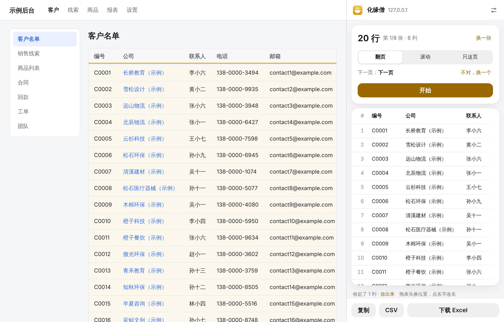
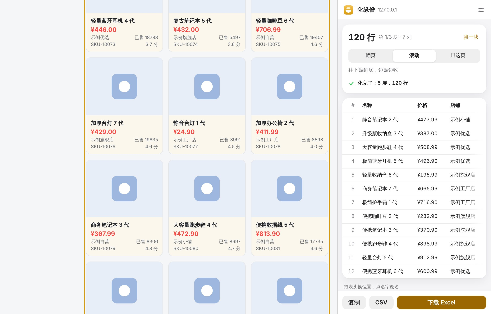
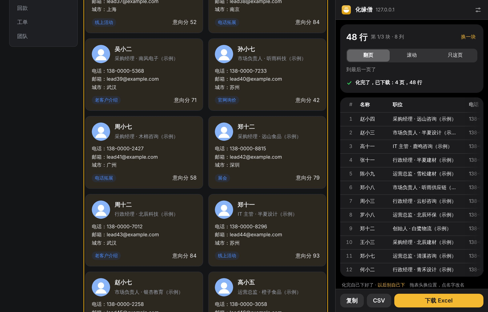

化缘僧
过路留名，见网扒皮
专治防复制网页。客户名录、商品列表，老衲一铲子全给你铲进表里。
0.3.0 · Chrome / Edge · 免费
过路留名，见网扒皮
专治防复制网页。客户名录、商品列表，老衲一铲子全给你铲进表里。

金框是它认出的名单，虚框是它找到的「下一页」。都是它自己干的。
拿不准的标黄。剩下的，贫僧自己来。
同一套 6 个测试页，表格、卡片、翻页、加载更多、无限滚动。
测试页是我们自己出的题，数字来自比武报告。
要登录的后台也行：用的就是你浏览器里已经登录的那一页。

商品列表：没点开始，自己滚到底，120 件。

卡片线索翻 4 页：48 条，化完自己下好了。
还没上商店，先用开发者模式装，三分钟。
edge://extensionsChrome 用 chrome://extensions